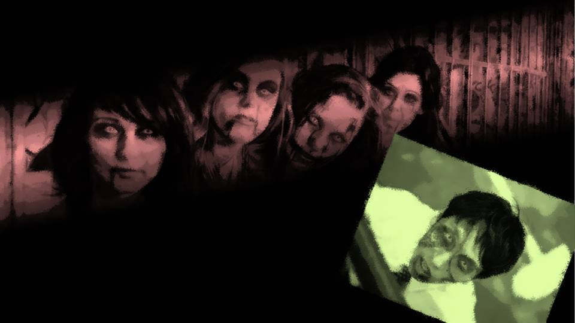
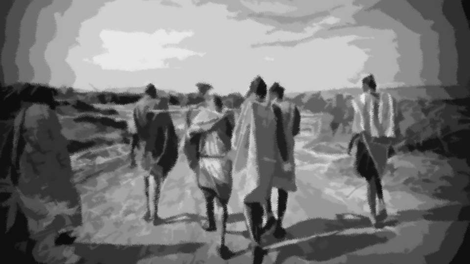

Script 00001A8C
First, please take a look at this footage.

A woman bravely facing a horde of zombies with a single gun.
And children fleeing in panic.
Will they be able to escape this horde of zombies?
And children fleeing in panic.
Will they be able to escape this horde of zombies?
This is a scene from the Hollywood movie 'Undead Revenge 2,' due out next year.
These days, one sees many movies that take zombies as their subject.
Some classify movies like this― especially ones about zombies created by viruses or human experimentation, into a genre called 'science apocalypse.'
To begin with, what exactly is a zombie?
These days, one sees many movies that take zombies as their subject.
Some classify movies like this― especially ones about zombies created by viruses or human experimentation, into a genre called 'science apocalypse.'
To begin with, what exactly is a zombie?

The zombie derives originally from "Nzambi," a god worshipped in the Congo region of Africa.
"Things that possess mysterious power" are called nzambi, and the term extends to people, animals, objects and more.
Because of this religious side, there are also priests, and among their concepts is one of 'controlling corpses.'
Part of this concept has become the zombie widely known today.
"Things that possess mysterious power" are called nzambi, and the term extends to people, animals, objects and more.
Because of this religious side, there are also priests, and among their concepts is one of 'controlling corpses.'
Part of this concept has become the zombie widely known today.
Such priests are sometimes called jujutsusha, "sorcerers," in Japanese, and necromancers in English.
The concept of controlling corpses was shared not only in Africa, but in East and West alike.
In other words, it can be inferred that the phenomenon of controlling corpses was a universal idea.
Dr. Michael Norman, a cultural anthropologist of Africa, says the following.
The concept of controlling corpses was shared not only in Africa, but in East and West alike.
In other words, it can be inferred that the phenomenon of controlling corpses was a universal idea.
Dr. Michael Norman, a cultural anthropologist of Africa, says the following.

"Not only with humans, the phenomenon of corpses moving can be seen in the natural world as well.
For example, among the fungi that parasitize ants, there are some that take over the ant's body and move it onto a leaf where it's easy to scatter spores.
There is also a real parasite called Leucochloridium, which manipulates a snail's nervous system and moves its body at will.
Phenomena resembling 'zombies' exist quite commonly in the natural world."
"In other words, we cannot say for certain that the phenomenon of controlling humans never occurs in the natural world either.
Perhaps there were African natives who witnessed a human being controlled with their own eyes.
I believe that it changed form in various ways into the zombie, a monster in which a dead corpse moves."
"For example, the Guinea worm, a parasite that lives in Africa, infects humans through drinking water.
Then it grows in the stomach over a year, and finally moves to the leg.
This is accompanied by fever and severe pain.
When the person goes into water to cool the fever, the Guinea worm breaks through the skin of the foot and lays its eggs in the water.
Like this, creatures that manipulate humans to leave offspring really do exist, and in an age before civilization developed, it would be no wonder if that looked like a curse or a dark power."
According to Dr. Michael Norman, the zombie is a phenomenon possible in terms of natural science.
At the end, the doctor said this.
At the end, the doctor said this.
"Humans go mad, corpses start to move, demons run rampant.
Descriptions like these are found here and there in all kinds of religious texts.
However, those were natural phenomena that could not be explained by the common knowledge of the time, and if we face them anew now, there are probably phenomena we can explain."
"Concluding that a supernatural phenomenon is an unknown power is easy.
But, humanity should have the courage not to be led astray by such an easy path, and to challenge unknown powers and confront them.
Before thinking of what just happened before your eyes as a curse, or sorcery, you should examine every possibility once more.
Every event, without fail, has a cause and a reason."